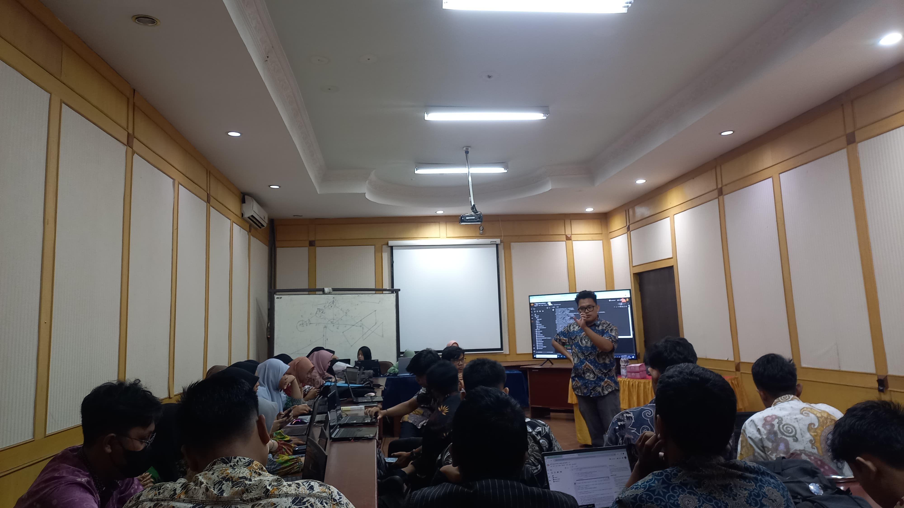

Program Kerja
1. FAIRCOS

Faircos merupakan program kerja utama komunitas ARCoS. Faorcos sendiri merupakan kepanjangan dari Festival Automation and Robotic Club of Sriwijaya. Kegiatan ini diadakan setiap tahunnya sejak tahun 2022 sebagai ajang untuk menjadikan komunitas ARCoS menjadi komunitas yang aktif dan produktif dalam hal bermanfaat.
2. MAKRAB

Makrab atau malam keakraban merupakan kegiatan yang dimana semua anggota akan melakukan berbagai macam kegiatan yang asik dan seru. Kegiatan ini bertujuan untuk mempererat tali persahabatan antar anggota dan sebagai ajang saling mengenal satu sama lain.
3. WORKSHOP
Kegiatan workshop merupakan kegiatan yang melibatkan pemateri dan audience dalam pengerjaan suatu project tertentu. Workshop di ARCoS biasanya dilakukan sebagai upaya persiapan pada kegiatan Kontes Robot Indonesia. Kegiatan ini diharapkan dapat membuat anggota lebih siap dalam pelaksanaan kegiatan KRI pada bidangnya masing - masing.